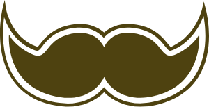

Bakmayın siz 2018 dediğimize... Reklam sektöründe, 20 yılı geçen deneyime sahip bir ekipten oluşuyoruz. Kısacası, Palabıyık olarak yeniyiz ama amatör değiliz. O zaman neden 2018’den beri diyoruz? Çünkü deneyimlerini, bakış açılarını ve becerilerini bir potada eritip 2018’de yeni bir hedefe birlikte ilerlemeye karar veren profesyonelleriz.
Diyelim ki markanız için iletişim çalışmalarına ihtiyacınız var: 360 derece pazarlama iletişimi... Stratejik planlama... Dijital reklam uygulamaları... Sosyal medya iletişimi... TV/Sinema reklam filmi, TV bant reklam, tanıtım filmi, radyo spotu, jingle... Basın ilanları... Açık hava kampanyası... Baskılı işler... Kurumsal kimlik ve/veya marka oluşturma... Ambalaj tasarımı... Tam hizmet ajansından ne bekliyorsanız Palabıyık’ta var. Siz Palabıyık diye seslenin, biz hemen yetişiriz!
Neler yapmadık ki! Kurumsal, konvansiyonel, dijital, sosyal... Reklam ve tanıtım dendiğinde aklınıza ne geliyorsa yaptık. Strateji oluşturduk, marka yarattık, kurumları tanıttık, konuşulan işler yaptık, ödül kazandık, markaya kazandırdık, yerel markalara da uluslararası markalara da çalıştık... Yaptık da yaptık!
Hepimiz! Reklama bakış açısı aynı olan, doğru ve yaratıcı işe inanan; boş konuşmak yerine deneyimini konuşturan; yapmış gibi yapmayan, iş yapan; olmadık fikirler değil, çalışan işler üreten; ne yaptığını bilen insanlarız. Aramızda havalı diye reklamcı olmak isteyen hevesliler ya da “ben oldum”cu çömezler yok.
Neler yapmadık ki! Kurumsal, konvansiyonel, dijital, sosyal... Reklam ve tanıtım dendiğinde aklınıza ne geliyorsa yaptık. Strateji oluşturduk, marka yarattık, kurumları tanıttık, konuşulan işler yaptık, ödül kazandık, markaya kazandırdık, yerel markalara da uluslararası markalara da çalıştık... Yaptık da yaptık!
map